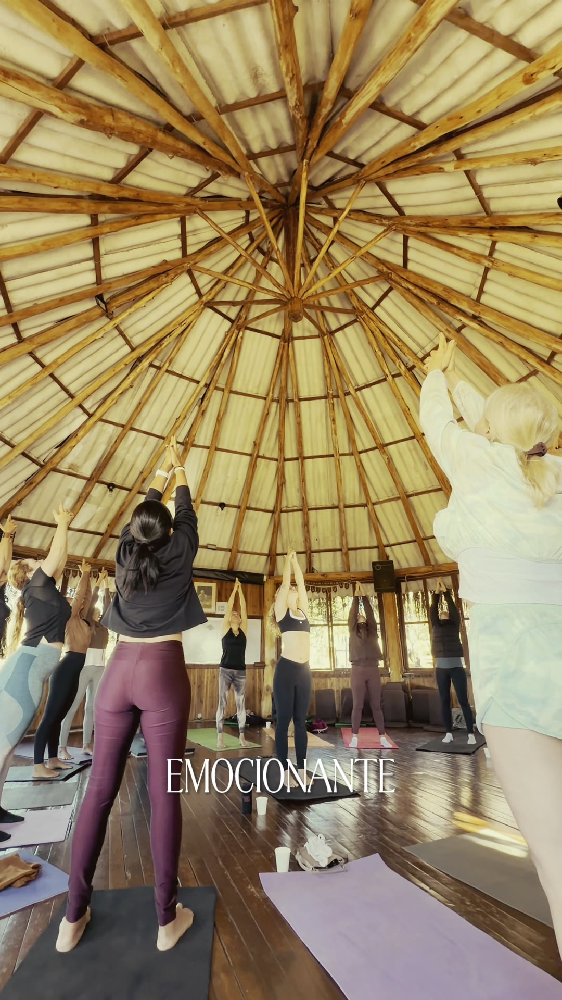

Qual serifada?
Cinco opções com as palavras dela, sobre um frame real do acervo e em fundo chapado.
A de cima é a que está no site hoje. Me diga o número.
De onde veio a atual
A Cormorant Garamond fui eu que escolhi, na proposta da direção
“Hora Dourada”. O ponto fraco dela: é provavelmente a serifada gratuita mais
usada em template de casamento e beleza, o que joga contra o briefing de não
parecer template. E é mais suave do que a tipografia de alto contraste que a
Karen realmente usa nos vídeos.
01Cormorant Garamond — a atual
Fina e elegante, mas de baixo contraste entre traço grosso e fino. Some sobre
imagem clara e é onipresente em templates do segmento.

Filmmaker · Storymaker · Fashion Film
Karen Lima
Vídeos cinematográficos para marcas, eventos e histórias inesquecíveis.
InvestimentoPacotes de cobertura
R$ 1.000
Não tenha medo de recomeçar
Encerramento com texto autoral sobre a paisagem.
02Instrument Serif
Alto contraste, desenho atual, itálico de verdade. Mais encorpada que a Cormorant,
então aguenta ficar sobre vídeo. Pouco usada em template — parece escolha, não padrão.
Filmmaker · Storymaker · Fashion Film
Karen Lima
Vídeos cinematográficos para marcas, eventos e histórias inesquecíveis.
InvestimentoPacotes de cobertura
R$ 1.000
Não tenha medo de recomeçar
Encerramento com texto autoral sobre a paisagem.
03Bodoni Moda
É a tipografia de revista de moda — Didone clássica, contraste extremo. O sinal
mais forte de “fashion” que existe. Risco: as hastes finíssimas somem em corpo pequeno e sobre imagem clara.
Filmmaker · Storymaker · Fashion Film
Karen Lima
Vídeos cinematográficos para marcas, eventos e histórias inesquecíveis.
InvestimentoPacotes de cobertura
R$ 1.000
Não tenha medo de recomeçar
Encerramento com texto autoral sobre a paisagem.
04Fraunces
Variável, com um eixo de “esquisitice” que dá personalidade. Mais quente e menos
formal. Foi a que propus na direção “Corte Seco”. Boa se a marca puxar para autoral em vez de luxo.
Filmmaker · Storymaker · Fashion Film
Karen Lima
Vídeos cinematográficos para marcas, eventos e histórias inesquecíveis.
InvestimentoPacotes de cobertura
R$ 1.000
Não tenha medo de recomeçar
Encerramento com texto autoral sobre a paisagem.
05Newsreader
Editorial, desenhada para tela, muito legível em texto corrido. A mais sóbria das
cinco — ganha em leitura e perde em glamour.
Filmmaker · Storymaker · Fashion Film
Karen Lima
Vídeos cinematográficos para marcas, eventos e histórias inesquecíveis.
InvestimentoPacotes de cobertura
R$ 1.000
Não tenha medo de recomeçar
Encerramento com texto autoral sobre a paisagem.
Minha leitura
Se o objetivo é parecer fashion film, a 03 é a que mais grita isso — mas exige
cuidado, porque hairline sobre vídeo é justamente o problema de contraste que a gente acabou de
corrigir. A 02 é a aposta mais segura: tem o contraste alto que a Karen usa, aguenta ficar sobre
imagem e não tem cara de template. A 04 é a mais autoral, se a marca dela for menos “luxo” e mais
“assinatura”.
Todas são gratuitas e do Google Fonts, então trocar é uma linha no index.html e uma no
globals.css.